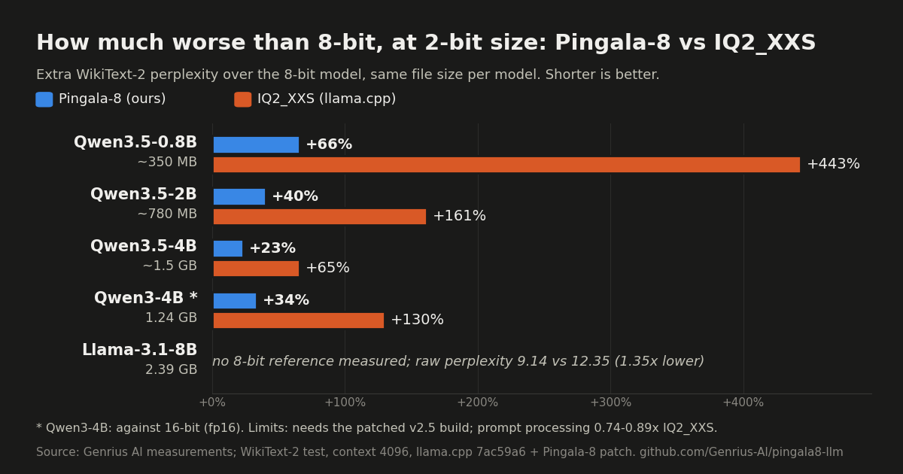
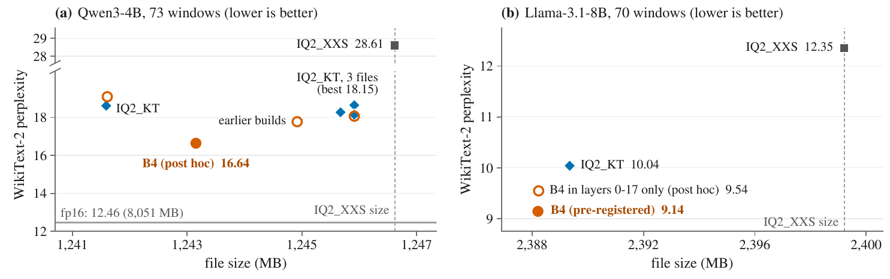

We compressed LLMs by 85%. Same size as llama.cpp's 2-bit, much smarter.
Pingala-8 stores Qwen3-4B in 1.24 GB instead of 8.05 GB. That is the same file size as llama.cpp's smallest common 2-bit format, IQ2_XXS, and it scores 21% higher on five standard quizzes. No retraining: it compresses the model you already have. Code, logs and a one-click Windows build are open.
Real time, not sped up. Text and timing come from a real run of Pingala-8 Qwen3-4B (1.24 GB) on an RTX 5070 Ti Laptop GPU; the chat window is recreated.
Smaller, smarter at the same size, fast at writing
Qwen3-4B unless noted. Measured on one GPU (RTX 5070 Ti Laptop). Every number is in the paper and the logs in the repository.
Qwen3-4B goes from 8.05 GB (fp16) to 1.24 GB, 6.5x less. Llama-3.1-8B goes from 16.08 GB to 2.39 GB.
Average of five tasks: 50.8 against 41.9 for IQ2_XXS. That keeps 90% of the 8-bit model's 56.3.
About 216 tokens per second when writing a reply (batch 1), 1.10x IQ2_XXS. Reading long prompts is slower: 0.74x.
Results across 5 models
At the same file size, Pingala-8 stays much closer to the 8-bit model than llama.cpp's IQ2_XXS on every model we released. Downloads so far: about 2,390 downloads on Hugging Face across the five models (all-time, as of 27 Oct 2026).


| Model | Size | Perplexity: Pingala-8 vs IQ2_XXS | IQ2_XXS / Pingala-8 |
|---|---|---|---|
| Qwen3.5-0.8B | 0.35 GB | 25.97 vs 85.09 | 3.28x lower |
| Qwen3.5-2B | 0.78 GB | 15.62 vs 29.08 | 1.86x lower |
| Qwen3.5-4B | 1.51 GB | 10.97 vs 14.75 | 1.34x lower |
| Qwen3-4B | 1.24 GB | 16.64 vs 28.61 | 1.72x lower |
| Llama-3.1-8B | 2.39 GB | 9.14 vs 12.35 | 1.35x lower |
WikiText-2 perplexity, lower is better; IQ2_XXS (llama.cpp) at the same file size. Llama-3.1-8B: pre-registered; with a BOS at every window it is 8.44 vs 9.36 for IQ2_KT. Limits: the files need the patched build (v2.5 for the Qwen3.5 models; stock llama.cpp, Ollama and LM Studio cannot load them), prompt processing is 0.74-0.89x IQ2_XXS, some IQ2_KT files are smaller (Qwen3.5 rows), and on Qwen3-14B the recipe narrowly loses to IQ2_KT (9.57 vs 9.40). Per-model charts: Qwen3.5-0.8B, Qwen3.5-2B, Qwen3.5-4B, Qwen3-4B, Llama-3.1-8B.


Same bytes, lower perplexity
Perplexity measures how well a model predicts real text; lower is better. On WikiText-2 the original Qwen3-4B scores 12.46. At the IQ2_XXS file size, Pingala-8 scores 16.64, against 28.61 for IQ2_XXS (42% lower) and 18.15 for the strongest IQ2_KT file of this size we built.

Quiz scores, Qwen3-4B
Zero-shot accuracy (%). All three 2-bit files are about 1.24 GB. The original is the 8-bit Q8_0 file.
| Task | Original (8-bit) | IQ2_XXS | IQ2_KT | Pingala-8 | vs IQ2_XXS |
|---|---|---|---|---|---|
| ARC-Easy | 66.1 | 43.9 | 53.3 | 60.9 | +39% |
| ARC-Challenge | 45.2 | 29.1 | 35.1 | 37.8 | +30% |
| HellaSwag | 65.8 | 47.8 | 53.3 | 57.7 | +21% |
| WinoGrande | 65.5 | 57.5 | 57.9 | 63.8 | +11% |
| MMLU | 38.7 | 31.1 | 32.9 | 34.0 | +9% |
| Average | 56.3 | 41.9 | 46.5 | 50.8 | +21% |
Where Pingala-8 wins, and where others do
Qwen3-4B, WikiText-2 perplexity at context 4096, the same test for every file. Lower is better.
| Format | Size | Perplexity | Our honest note |
|---|---|---|---|
| Pingala-8 (B4)Genrius AI | 1.24 GB | 16.64 | Compresses the original model, no retraining. Needs our patched llama.cpp and an NVIDIA GPU (CUDA). |
| IQ2_XXSllama.cpp | 1.25 GB | 28.61 | Same size. Runs in stock llama.cpp, Ollama and LM Studio, on CPU and Mac too. Reads prompts faster (we run at 0.74x). We score 21% higher on the quizzes and write 1.10x as fast. |
| IQ2_KTik_llama.cpp | 1.25 GB | 18.15 | Same size, and the strongest same-size rival we built. Reads prompts about 1.3x faster than ours. It beats us on Qwen3-14B (9.40 against our 9.57). |
| Q4_K_Mllama.cpp | about 2x ours | not compared | A bigger 4-bit file; pick it if memory is not your limit. We compared speed only: at batch 1 we write 39% faster at half its size. |
| GSQ Q2_KISTA-DASLab | 1.67 GB | 14.37 | Better perplexity than ours, with a file 34% bigger. |
| Ternary Bonsai 4Bprism-ml | 1.07 GB | 11.59 | Better and smaller. It is a retrained model, not a compression of Qwen3-4B (it even beats the original), and needs a training run and their fork. |
| Qwen3-4B fp16original | 8.05 GB | 12.46 | The uncompressed model, for reference. |
Our reading: among the formats we tested, Pingala-8 gives the lowest perplexity for compressing the original Qwen3-4B to about 1.24 GB without retraining. If you only want a strong small model in this class, a retrained model like Ternary Bonsai is the better choice. Pingala-8 is for compressing models nobody has retrained for you. On Llama-3.1-8B (2.39 GB) it also beats both same-size formats: 8.44 against 9.36 for IQ2_KT.
Run it: one click, or one line on Linux
Windows or Linux with an NVIDIA RTX GPU (30, 40 or 50 series) and a recent driver. No Python, no build. Stock llama.cpp, Ollama and LM Studio will refuse these files with a load error; use one of these instead. Pick one of the three:
-
Windows: one click
Get
pingala8-windows-cuda12.zip(1.6 GB) from the latest release, unzip it and double-clickrun_qwen3_4b.bat.The model downloads once (size and sha256 checked), then a chat page opens at
http://127.0.0.1:8080. Close the black window to stop. -
Linux: one line
curl -fsSL https://genrius-ai.github.io/pingala8-llm/install.sh | bashIt downloads the latest Linux build, checks its size and sha256, unpacks it to
~/pingala8and prints the command for each model, such ascd ~/pingala8 && ./run.sh qwen. Read the script. -
Linux: one click
Or get
pingala8-linux-cuda13.tar.gz(1.4 GB) from the same release, extract it and run./run.sh qwen.Then open
http://127.0.0.1:8080. Everything runs on your machine.
| Model (Hugging Face) | Download | Windows | Linux |
|---|---|---|---|
| Qwen3-4B | 1.24 GB | run_qwen3_4b.bat | ./run.sh qwen |
| Llama-3.1-8B (base model, Built with Llama) | 2.39 GB | run_llama31_8b.bat | ./run.sh llama |
| Qwen3.5-4B (text only) | 1.51 GB | run_qwen35_4b.bat | ./run.sh qwen35-4b |
| Qwen3.5-2B (text only) | 0.78 GB | run_qwen35_2b.bat | ./run.sh qwen35-2b |
| Qwen3.5-0.8B (text only) | 0.35 GB | run_qwen35_0_8b.bat | ./run.sh qwen35-0.8b |
Running? A star on GitHub helps others find it.
Will it fit your GPU? Normal vs Pingala-8 calculator
Building from source, running the paper's perplexity test, or using the CPU patch: see the quick start in the README.
A trellis code over groups of 4 weights
Most 2-bit formats round each small group of weights on its own. Pingala-8 codes the groups in sequence with Ungerboeck's 8-state trellis code: a small state carries over from one group of 4 weights to the next and decides which set of values the next group may use, so the same bits land closer to the true weights.
Before coding, a random Hadamard rotation spreads out the few very large weights, and LDLQ rounding passes each column's error on to the columns not yet coded. These ideas come from QuIP, QuIP# and QTIP, and the format sits next to ikawrakow's IQ2_KT. A CUDA patch to llama.cpp (commit 7ac59a6) reads the file.
Read the full article for the plain-language and technical story.
Why the name
Pingala's Chandahsutra, an ancient Sanskrit work on poetic metre, lists the 8 patterns of three long or short syllables, the ganas. Our code has 8 states over short patterns, so we named it after him. The name is credit; the trellis labels are Ungerboeck's.
What we lose
Please read this before you choose Pingala-8.
- It loses on Qwen3-14B.We predicted a win before the run and did not get one: 9.57 against 9.40 for IQ2_KT on WikiText-2, a tie on C4.
- Prompts are slower.Reading a prompt runs at 0.74x IQ2_XXS. Long documents take longer before the first word.
- Batched decoding is slower.Serving 2 to 8 chats at once runs at 0.18x to 0.34x IQ2_XXS. It suits one person on one GPU, not a server.
- Needs our runtime.Patched llama.cpp with CUDA only. Stock llama.cpp, Ollama and LM Studio cannot load it yet. No Metal or Vulkan; CPU generation is 0.56x to 0.62x IQ2_XXS.
- The Qwen3-4B number is tuned.That file is the last of many builds tested on WikiText-2. C4 was held out; the Llama-3.1-8B and Qwen3-14B runs were pre-registered.
- One GPU, no safety evaluation.Speed was measured on one RTX 5070 Ti Laptop. We have not evaluated the safety behaviour of the compressed models.
Running LLMs on small GPUs
Plain-language guides to memory, quantization and quality, with measured numbers and where Pingala-8 does and does not fit.
How much VRAM do you need to run an LLM locally?
Work out GPU memory from file size, KV cache and headroom, with what fits on 4, 6, 8 and 12 GB.
What is a 2-bit LLM, and is 2-bit quantization usable?
What 2-bit does to a model, measured on Qwen3-4B from IQ1_M to Q2_K, and when it is a poor fit.
IQ2_XXS vs IQ2_KT vs Q2_K vs Q4_K_M: which GGUF quant?
GGUF names decoded, one table of size, perplexity, quiz scores and speed, and a short decision guide.
What is perplexity? LLM perplexity in plain English
What the number means, what counts as a good score, and how to compare quantized models fairly.
How to run Qwen3-4B on a 4 GB or 6 GB GPU
Which Qwen3-4B file fits a small card, how much context you keep, and the llama.cpp settings that help.
How to run Llama 3.1 8B on a 4 GB or 6 GB GPU
Q4_K_M, partial offload or a 2-bit file: what fits, how much context you keep, and what each option costs.
What is trellis-coded quantization? TCQ, QTIP and IQ2_KT
How a trellis links rounding choices, why the Viterbi search makes files better, and who uses it for LLMs.
What is Hadamard rotation in LLM quantization?
Why quantizers rotate weights before rounding: outliers, incoherence, QuIP, QuaRot, with a worked example.
Qwen3.8 27B VRAM requirements: which GPU do you need?
VRAM for FP16, Q8_0, Q4_K_M and IQ2_XXS, which NVIDIA cards fit at 4k to 32k context, and why the hybrid cache is small.
Gemma 4 VRAM requirements: 26B-A4B and 31B
Memory per quantization for both models, GPU fit at 4k to 32k, and how sliding windows and K-equals-V shape the cache.
Can you run gpt-oss-20b on a 12 GB or 16 GB GPU?
Real GGUF sizes (MXFP4 12.11 GB), the 128-token sliding-window cache, and expert offload for 12 GB cards.
Qwen3.6 35B-A3B on a consumer GPU: VRAM and MoE offload
Why all 256 experts must be in memory, what fits on 12 to 32 GB cards, and how expert offload works.
Read and cite the paper
Small-State Coset Trellis Coding at IQ2_XXS Size: An Equal-Bytes Study in llama.cpp
Harshit Goyal, Genrius AI. Preprint, version 2.4, October 2026. DOI: 10.5281/zenodo.23481757
@misc{goyal2026pingala8,
title = {Small-State Coset Trellis Coding at {IQ2\_XXS} Size:
An Equal-Bytes Study in {llama.cpp}},
author = {Goyal, Harshit},
year = {2026},
month = oct,
publisher = {Zenodo},
doi = {10.5281/zenodo.23481757},
url = {https://doi.org/10.5281/zenodo.23481757},
note = {Preprint, version 2.4.
Code: https://github.com/Genrius-AI/pingala8-llm}
}